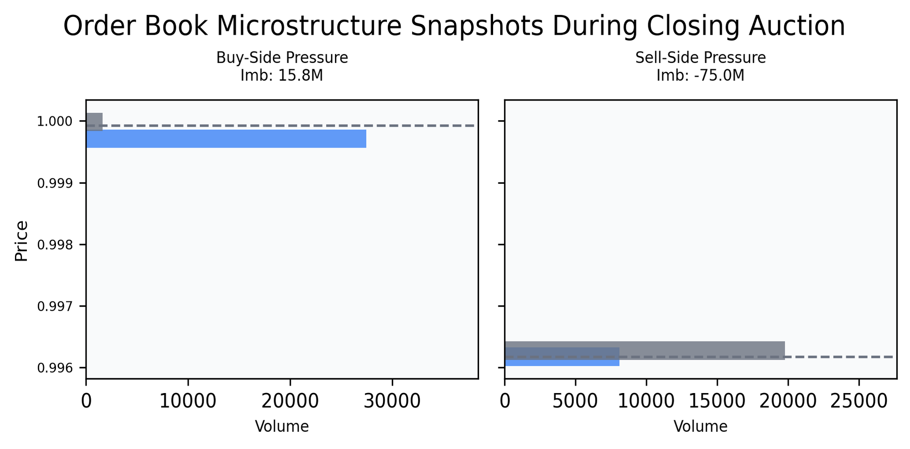
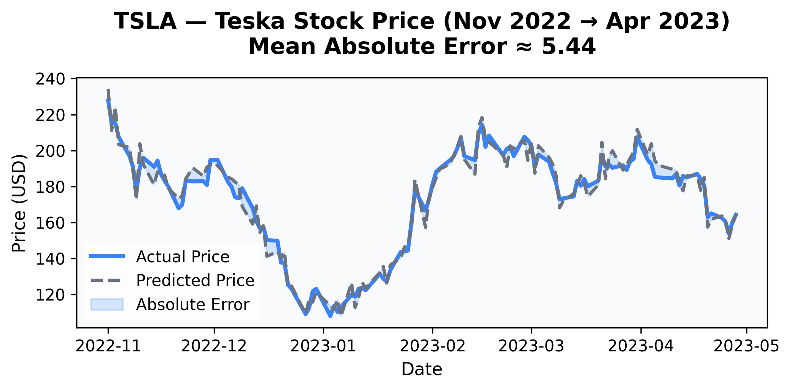
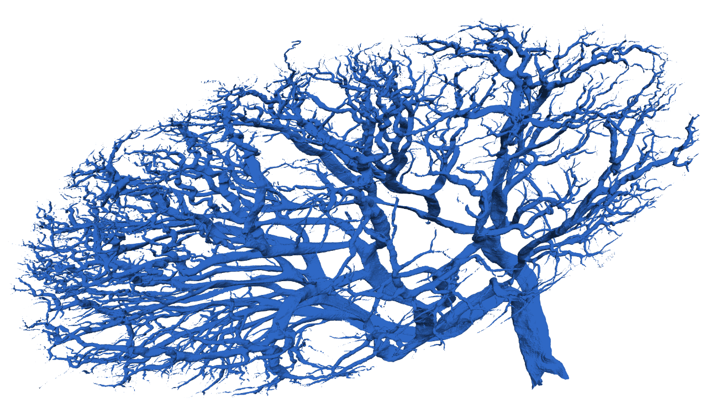
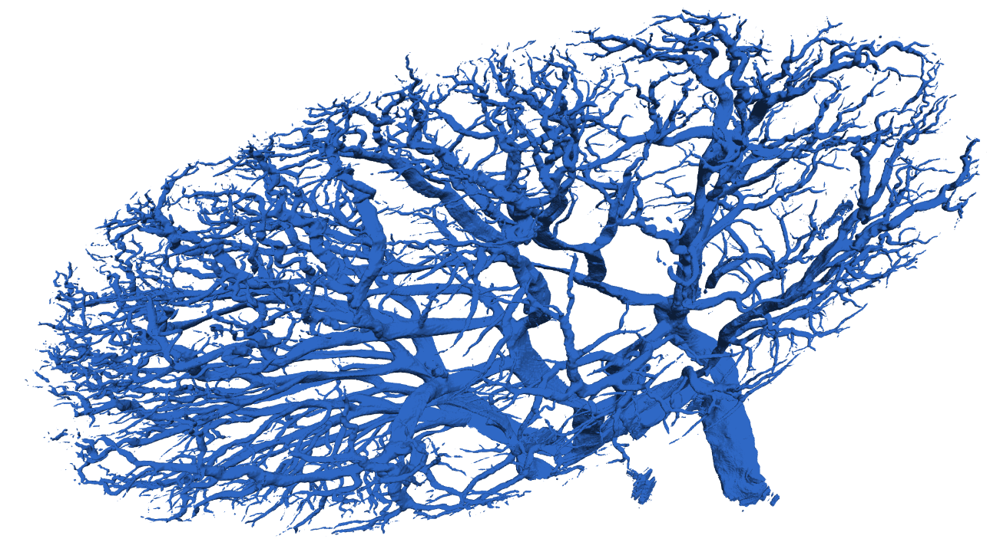
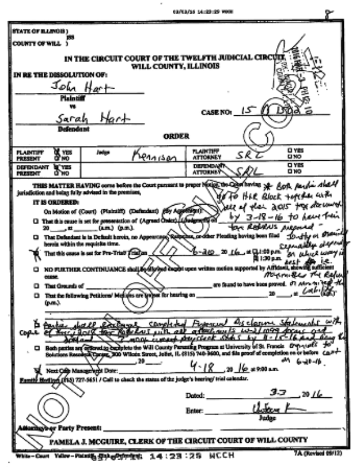

Showcase
Examples of our tabular modeling, image modeling, and Vision Language Question Answering solutions. At Kiy Analytics we can make fully custom solutions across nearly any domain or input. We invite you to dream big and allow us to show what is possible in the world of data.


Why this matters - Business sensitive tabular modeling can help predict outcomes before they happen which aids in identifying risks, improving decision-making, enabling automation, and more. The models predicting transplant survival before it happens here directly supports more equitable healthcare outcomes and better use of limited medical resources that leads to saving lives.


Why this matters - Hyper accurate 3D predictions turn raw imaging data into structured understanding. In This enables you to quantify, study, and analyze at scale in a way that is not feasible manually. In this instance, Kiy scientists are able to take mass unlabeled data and provide researchers with a biological mapping they can use to understand patients like never before, leading to treatment advancement, cost reduction, and lives saved.

Why this matters - Vision-language systems convert unstructured image or language documents into structured databases and automated workflows. This enables large-scale document understanding, operational automation, and decision support systems across image or language data. Kiy scientists have turned this once world leading model into nearly $50 million in automation since January 2025.